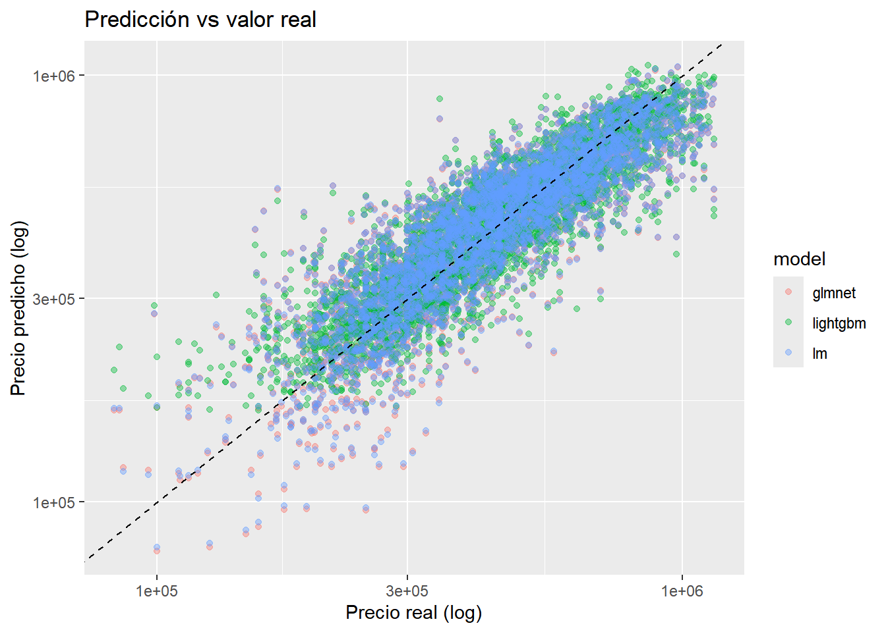
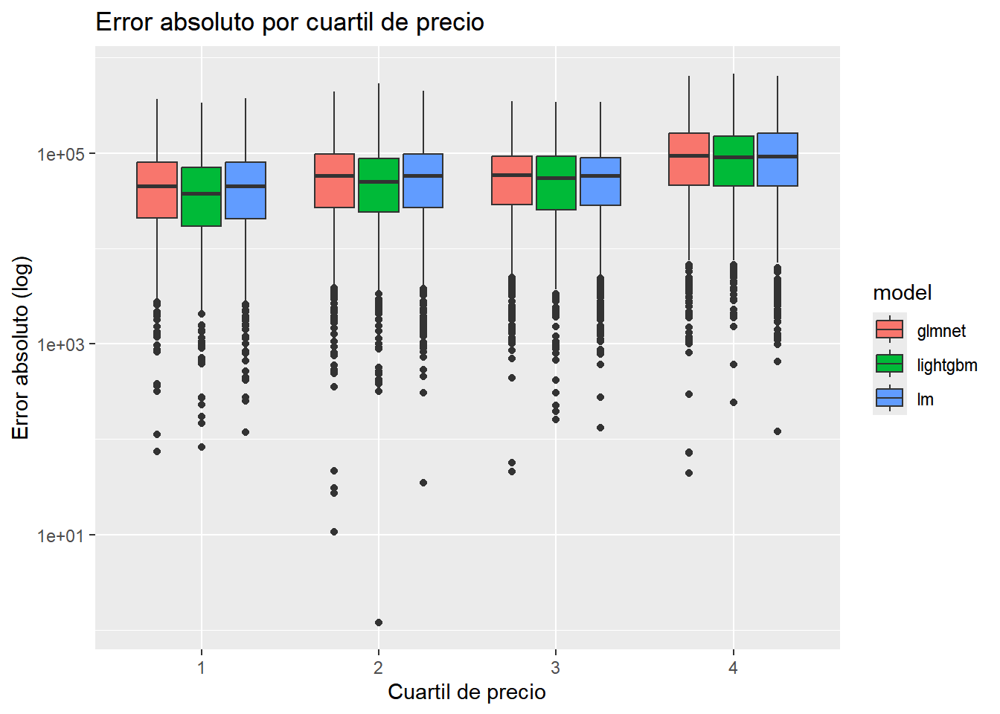

Rows: 13603 Columns: 14
── Column specification ────────────────────────────────────────────────────────
Delimiter: ","
dbl (7): price, bedrooms, grade, living_in_m2, real_bathrooms, month, quart...
lgl (6): has_basement, renovated, nice_view, perfect_condition, has_lavator...
date (1): date
ℹ Use `spec()` to retrieve the full column specification for this data.
ℹ Specify the column types or set `show_col_types = FALSE` to quiet this message.
Rows: 6700 Columns: 14
── Column specification ────────────────────────────────────────────────────────
Delimiter: ","
dbl (7): price, bedrooms, grade, living_in_m2, real_bathrooms, month, quart...
lgl (6): has_basement, renovated, nice_view, perfect_condition, has_lavator...
date (1): date
ℹ Use `spec()` to retrieve the full column specification for this data.
ℹ Specify the column types or set `show_col_types = FALSE` to quiet this message.
En esta sección se ajustan los hiperparámetros de los modelos mediante validación cruzada, utilizando un esquema común de resampling y métricas de evaluación.
Resampling: validación cruzada con rsample
Se utiliza validación cruzada con 5 folds, estratificada por la variable objetivo (price), para obtener estimaciones más estables del desempeño de los modelos.
Las métricas de evaluación (rmse, rsq, mae) provienen del paquete yardstick, que forma parte del ecosistema tidymodels y se utiliza tanto durante el tuning como en la evaluación final.
reg_metrics <-metric_set( rmse, rsq, mae)
Tuning del modelo de Regresión regularizada (glmnet)
# A tibble: 9 × 4
model .metric .estimator .estimate
<chr> <chr> <chr> <dbl>
1 glmnet rmse standard 104130.
2 lightgbm rmse standard 99792.
3 lm rmse standard 104092.
4 glmnet rsq standard 0.743
5 lightgbm rsq standard 0.764
6 lm rsq standard 0.744
7 glmnet mae standard 77352.
8 lightgbm mae standard 72871.
9 lm mae standard 77355.
10. Visualización de desempeño
all_preds %>%ggplot(aes(x = price, y = .pred, color = model)) +geom_point(alpha =0.4) +geom_abline(linetype ="dashed") +scale_x_log10() +scale_y_log10() +labs(title ="Predicción vs valor real",x ="Precio real (log)",y ="Precio predicho (log)" )

all_preds %>%mutate(residual = price - .pred) %>%ggplot(aes(x = price, y = residual, color = model)) +geom_point(alpha =0.4) +scale_x_log10() +geom_hline(yintercept =0, linetype ="dashed") +labs(title ="Residuos vs precio real",x ="Precio real (log)",y ="Residuo" )
all_preds %>%mutate(abs_error =abs(price - .pred),price_bin =ntile(price, 4) ) %>%ggplot(aes(x =factor(price_bin), y = abs_error, fill = model)) +geom_boxplot() +scale_y_log10() +labs(title ="Error absoluto por cuartil de precio",x ="Cuartil de precio",y ="Error absoluto (log)" )

Nota final
En este notebook se realizó el ajuste de hiperparámetros y la evaluación comparativa de distintos modelos de regresión bajo un esquema de resampling común.
El uso de workflows, tune y rsample permite construir pipelines reproducibles, comparables y extensibles, facilitando la selección del modelo más adecuado para el problema.
En un escenario productivo, el siguiente paso podría incluir: - análisis de importancia de variables - evaluación de errores por segmento - validación externa o temporal